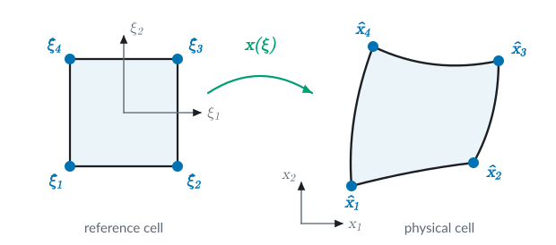
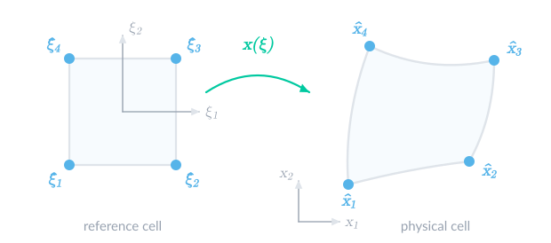

FEValues
A key type of object in Ferrite is the so-called FEValues, where the most common ones are CellValues and FacetValues. These objects are used inside the element routines and are used to query the integration weights, shape function values and gradients, and much more; see CellValues, MultiFieldCellValues, and FacetValues. For these values to be correct, it is necessary to reinitialize these for the current cell by using the reinit! function. This function maps the values from the reference cell to the actual cell, a process described in detail below, see Mapping of finite elements. After that, we show an implementation of a SimpleCellValues type to illustrate how CellValues work for the most standard case, excluding the generalizations and optimization that complicates the actual code.
Mapping of finite elements
The shape functions and gradients stored in an FEValues object, are reinitialized for each cell by calling the reinit! function. The main part of this calculation, considers how to map the values and derivatives of the shape functions, defined on the reference cell, to the actual cell.
The geometric mapping of a finite element from the reference coordinates to the real coordinates is shown in the following illustration.


Here, $\xi_i$ is reference coordinate $i$ and $x_i$ the corresponding real coordinate, while $\hat{\boldsymbol{\xi}}_\alpha$ and $\hat{\boldsymbol{x}}_\alpha$ are the reference and real positions of node $\alpha$.
This mapping is given by the geometric shape functions, $\hat{N}_i^g(\boldsymbol{\xi})$, such that
\[\begin{align*} \boldsymbol{x}(\boldsymbol{\xi}) =& \sum_{\alpha=1}^N \hat{\boldsymbol{x}}_\alpha \hat{N}_\alpha^g(\boldsymbol{\xi}) \\ \boldsymbol{J} :=& \frac{\mathrm{d}\boldsymbol{x}}{\mathrm{d}\boldsymbol{\xi}} = \sum_{\alpha=1}^N \hat{\boldsymbol{x}}_\alpha \otimes \frac{\mathrm{d} \hat{N}_\alpha^g}{\mathrm{d}\boldsymbol{\xi}}\\ \boldsymbol{\mathcal{H}} :=& \frac{\mathrm{d} \boldsymbol{J}}{\mathrm{d} \boldsymbol{\xi}} = \sum_{\alpha=1}^N \hat{\boldsymbol{x}}_\alpha \otimes \frac{\mathrm{d}^2 \hat{N}^g_\alpha}{\mathrm{d} \boldsymbol{\xi}^2} \end{align*}\]
where the defined $\boldsymbol{J}$ is the jacobian of the mapping, and in some cases we will also need the corresponding hessian, $\boldsymbol{\mathcal{H}}$ (3rd order tensor).
We require that the mapping from reference coordinates to real coordinates is diffeomorphic, meaning that we can express $\boldsymbol{x} = \boldsymbol{x}(\boldsymbol{\xi}(\boldsymbol{x}))$, such that
\[\begin{align*} \frac{\mathrm{d}\boldsymbol{x}}{\mathrm{d}\boldsymbol{x}} = \boldsymbol{I} &= \frac{\mathrm{d}\boldsymbol{x}}{\mathrm{d}\boldsymbol{\xi}} \cdot \frac{\mathrm{d}\boldsymbol{\xi}}{\mathrm{d}\boldsymbol{x}} \quad\Rightarrow\quad \frac{\mathrm{d}\boldsymbol{\xi}}{\mathrm{d}\boldsymbol{x}} = \left[\frac{\mathrm{d}\boldsymbol{x}}{\mathrm{d}\boldsymbol{\xi}}\right]^{-1} = \boldsymbol{J}^{-1} \end{align*}\]
Depending on the function interpolation, we may want different types of mappings to conserve certain properties of the fields. This results in the different mapping types described below.
Identity mapping
Ferrite.IdentityMapping
For scalar fields, we always use scalar base functions. For tensorial fields (non-scalar, e.g. vector-fields), the base functions can be constructed from scalar base functions, by using e.g. VectorizedInterpolation. From the perspective of the mapping, however, each component is mapped as an individual scalar base function. And for scalar base functions, we only require that the value of the base function is invariant to the element shape (real coordinate), and only depends on the reference coordinate, i.e.
\[\begin{align*} N(\boldsymbol{x}) &= \hat{N}(\boldsymbol{\xi}(\boldsymbol{x}))\nonumber \\ \mathrm{grad}(N(\boldsymbol{x})) &= \frac{\mathrm{d}\hat{N}}{\mathrm{d}\boldsymbol{\xi}} \cdot \boldsymbol{J}^{-1} \end{align*}\]
Second order gradients of the shape functions are computed as
\[\begin{align*} \mathrm{grad}(\mathrm{grad}(N(\boldsymbol{x}))) = \frac{\mathrm{d}^2 N}{\mathrm{d}\boldsymbol{x}^2} = \boldsymbol{J}^{-T} \cdot \left[\frac{\mathrm{d}^2\hat{N}}{\mathrm{d}\boldsymbol{\xi}^2} - \mathrm{grad}(N) \cdot \boldsymbol{\mathcal{H}} \right] \cdot \boldsymbol{J}^{-1} \end{align*}\]
Derivation
The gradient of the shape functions is obtained using the chain rule:
\[\begin{align*} \frac{\mathrm{d} N}{\mathrm{d}x_i} = \frac{\mathrm{d} \hat N}{\mathrm{d} \xi_r}\frac{\mathrm{d} \xi_r}{\mathrm{d} x_i} = \frac{\mathrm{d} \hat N}{\mathrm{d} \xi_r} J^{-1}_{ri} \end{align*}\]
For the second order gradients, we first use the product rule on the equation above:
\[\begin{align} \frac{\mathrm{d}^2 N}{\mathrm{d}x_i \mathrm{d}x_j} = \frac{\mathrm{d}}{\mathrm{d}x_j}\left[\frac{\mathrm{d} \hat N}{\mathrm{d} \xi_r}\right] J^{-1}_{ri} + \frac{\mathrm{d} \hat N}{\mathrm{d} \xi_r} \frac{\mathrm{d}J^{-1}_{ri}}{\mathrm{d}x_j} \end{align}\]
Using the fact that $\frac{\mathrm{d}\hat{f}(\boldsymbol{\xi})}{\mathrm{d}x_j} = \frac{\mathrm{d}\hat{f}(\boldsymbol{\xi})}{\mathrm{d}\xi_s} J^{-1}_{sj}$, the first term in the equation above can be expressed as:
\[\begin{align*} \frac{\mathrm{d}}{\mathrm{d}x_j}\left[\frac{\mathrm{d} \hat N}{\mathrm{d} \xi_r}\right] J^{-1}_{ri} = J^{-1}_{sj}\frac{\mathrm{d}}{\mathrm{d}\xi_s}\left[\frac{\mathrm{d} \hat N}{\mathrm{d} \xi_r}\right] J^{-1}_{ri} = J^{-1}_{sj}\left[\frac{\mathrm{d}^2 \hat N}{\mathrm{d} \xi_s\mathrm{d} \xi_r}\right] J^{-1}_{ri} \end{align*}\]
The second term can be written as:
\[\begin{align*} \frac{\mathrm{d} \hat N}{\mathrm{d} \xi_r}\frac{\mathrm{d}J^{-1}_{ri}}{\mathrm{d}x_j} = \frac{\mathrm{d} \hat N}{\mathrm{d} \xi_r}\left[\frac{\mathrm{d}J^{-1}_{ri}}{\mathrm{d}\xi_s}\right]J^{-1}_{sj} = \frac{\mathrm{d} \hat N}{\mathrm{d} \xi_r}\left[- J^{-1}_{rk}\mathcal{H}_{kps} J^{-1}_{pi}\right] J^{-1}_{sj} = - \frac{\mathrm{d} \hat N}{\mathrm{d} x_k}\mathcal{H}_{kps} J^{-1}_{pi}J^{-1}_{sj} \end{align*}\]
where we have used that the inverse of the jacobian can be computed as:
\[\begin{align*} 0 = \frac{\mathrm{d}}{\mathrm{d}\xi_s} (J_{kr} J^{-1}_{ri} ) = \frac{\mathrm{d}J_{kp}}{\mathrm{d}\xi_s} J^{-1}_{pi} + J_{kr} \frac{\mathrm{d}J^{-1}_{ri}}{\mathrm{d}\xi_s} = 0 \quad \Rightarrow \\ \end{align*}\]
\[\begin{align*} \frac{\mathrm{d}J^{-1}_{ri}}{\mathrm{d}\xi_s} = - J^{-1}_{rk}\frac{\mathrm{d}J_{kp}}{\mathrm{d}\xi_s} J^{-1}_{pi} = - J^{-1}_{rk}\mathcal{H}_{kps} J^{-1}_{pi}\\ \end{align*}\]
Covariant Piola mapping, H(curl)
Ferrite.CovariantPiolaMapping
The covariant Piola mapping of a vectorial base function preserves the tangential components. For the value, the mapping is defined as
\[\begin{align*} \boldsymbol{N}(\boldsymbol{x}) = \boldsymbol{J}^{-\mathrm{T}} \cdot \hat{\boldsymbol{N}}(\boldsymbol{\xi}(\boldsymbol{x})) \end{align*}\]
which yields the gradient,
\[\begin{align*} \mathrm{grad}(\boldsymbol{N}(\boldsymbol{x})) &= \boldsymbol{J}^{-T} \cdot \frac{\mathrm{d} \hat{\boldsymbol{N}}}{\mathrm{d} \boldsymbol{\xi}} \cdot \boldsymbol{J}^{-1} - \boldsymbol{J}^{-T} \cdot \left[\hat{\boldsymbol{N}}(\boldsymbol{\xi}(\boldsymbol{x}))\cdot \boldsymbol{J}^{-1} \cdot \boldsymbol{\mathcal{H}}\cdot \boldsymbol{J}^{-1}\right] \end{align*}\]
Derivation
Expressing the gradient, $\mathrm{grad}(\boldsymbol{N})$, in index notation,
\[\begin{align*} \frac{\mathrm{d} N_i}{\mathrm{d} x_j} &= \frac{\mathrm{d}}{\mathrm{d} x_j} \left[J^{-\mathrm{T}}_{ik} \hat{N}_k\right] = \frac{\mathrm{d} J^{-\mathrm{T}}_{ik}}{\mathrm{d} x_j} \hat{N}_k + J^{-\mathrm{T}}_{ik} \frac{\mathrm{d} \hat{N}_k}{\mathrm{d} \xi_l} J_{lj}^{-1} \end{align*}\]
Except for a few elements, $\boldsymbol{J}$ varies as a function of $\boldsymbol{x}$. The derivative can be calculated as
\[\begin{align*} \frac{\mathrm{d} J^{-\mathrm{T}}_{ik}}{\mathrm{d} x_j} &= \frac{\mathrm{d} J^{-\mathrm{T}}_{ik}}{\mathrm{d} J_{mn}} \frac{\mathrm{d} J_{mn}}{\mathrm{d} x_j} = - J_{km}^{-1} J_{in}^{-T} \frac{\mathrm{d} J_{mn}}{\mathrm{d} x_j} \nonumber \\ \frac{\mathrm{d} J_{mn}}{\mathrm{d} x_j} &= \mathcal{H}_{mno} J_{oj}^{-1} \end{align*}\]
Contravariant Piola mapping, H(div)
Ferrite.ContravariantPiolaMapping
The contravariant Piola mapping of a vectorial base function preserves the normal components. For the value, the mapping is defined as
\[\begin{align*} \boldsymbol{N}(\boldsymbol{x}) = \frac{\boldsymbol{J}}{\det(\boldsymbol{J})} \cdot \hat{\boldsymbol{N}}(\boldsymbol{\xi}(\boldsymbol{x})) \end{align*}\]
This gives the gradient
\[\begin{align*} \mathrm{grad}(\boldsymbol{N}(\boldsymbol{x})) = [\boldsymbol{\mathcal{H}}\cdot\boldsymbol{J}^{-1}] : \frac{[\boldsymbol{I} \underline{\otimes} \boldsymbol{I}] \cdot \hat{\boldsymbol{N}}}{\det(\boldsymbol{J})} - \left[\frac{\boldsymbol{J} \cdot \hat{\boldsymbol{N}}}{\det(\boldsymbol{J})}\right] \otimes \left[\boldsymbol{J}^{-T} : \boldsymbol{\mathcal{H}} \cdot \boldsymbol{J}^{-1}\right] + \boldsymbol{J} \cdot \frac{\mathrm{d} \hat{\boldsymbol{N}}}{\mathrm{d} \boldsymbol{\xi}} \cdot \frac{\boldsymbol{J}^{-1}}{\det(\boldsymbol{J})} \end{align*}\]
Derivation
Expressing the gradient, $\mathrm{grad}(\boldsymbol{N})$, in index notation,
\[\begin{align*} \frac{\mathrm{d} N_i}{\mathrm{d} x_j} &= \frac{\mathrm{d}}{\mathrm{d} x_j} \left[\frac{J_{ik}}{\det(\boldsymbol{J})} \hat{N}_k\right] =\nonumber\\ &= \frac{\mathrm{d} J_{ik}}{\mathrm{d} x_j} \frac{\hat{N}_k}{\det(\boldsymbol{J})} - \frac{\mathrm{d} \det(\boldsymbol{J})}{\mathrm{d} x_j} \frac{J_{ik} \hat{N}_k}{\det(\boldsymbol{J})^2} + \frac{J_{ik}}{\det(\boldsymbol{J})} \frac{\mathrm{d} \hat{N}_k}{\mathrm{d} \xi_l} J_{lj}^{-1} \\ &= \mathcal{H}_{ikl} J^{-1}_{lj} \frac{\hat{N}_k}{\det(\boldsymbol{J})} - J^{-T}_{mn} \mathcal{H}_{mnl} J^{-1}_{lj} \frac{J_{ik} \hat{N}_k}{\det(\boldsymbol{J})} + \frac{J_{ik}}{\det(\boldsymbol{J})} \frac{\mathrm{d} \hat{N}_k}{\mathrm{d} \xi_l} J_{lj}^{-1} \end{align*}\]
Walkthrough: Creating SimpleCellValues
In the following, we walk through how to create a SimpleCellValues type which works similar to Ferrite's CellValues, but is not performance optimized and not as general. The main purpose is to explain how the CellValues works for the standard case of IdentityMapping described above. Please note that several internal functions are used, and these may change without a major version increment. Please see the Developer documentation for their documentation.
We start by including Ferrite and Test (to check our implementation).
using Ferrite, TestThen, we define a simple version of the cell values object, which only supports
- Scalar interpolations
- Identity mapping from reference to physical cell.
- The cell shape has the same dimension as the physical space (excludes so-called embedded cells).
struct SimpleCellValues{T, dim} <: Ferrite.AbstractCellValues # Precalculated shape values, N[i, q_point] where i is the # shape function number and q_point the integration point N::Matrix{T} # Precalculated shape gradients in the reference domain, dNdξ[i, q_point] dNdξ::Matrix{Vec{dim, T}} # Cache for shape gradients in the physical domain, dNdx[i, q_point] dNdx::Matrix{Vec{dim, T}} # Precalculated geometric shape values, M[j, q_point] where j is the # geometric shape function number M::Matrix{T} # Precalculated geometric shape gradients, dMdξ[j, q_point] dMdξ::Matrix{Vec{dim, T}} # Given quadrature weights in the reference domain, weights[q_point] weights::Vector{T} # Cache for quadrature weights in the physical domain, detJdV[q_point], i.e. # det(J)*weight[q_point], where J is the jacobian of the geometric mapping # at the quadrature point, q_point. detJdV::Vector{T}end;Next, we create a constructor with the same input as CellValues
function SimpleCellValues(qr::QuadratureRule, ip_fun::Interpolation, ip_geo::Interpolation) dim = Ferrite.getrefdim(ip_fun) # Quadrature weights and coordinates (in reference cell) weights = Ferrite.getweights(qr) n_qpoints = length(weights) T = eltype(weights) # Function interpolation n_func_basefuncs = getnbasefunctions(ip_fun) N = zeros(T, n_func_basefuncs, n_qpoints) dNdx = zeros(Vec{dim, T}, n_func_basefuncs, n_qpoints) dNdξ = zeros(Vec{dim, T}, n_func_basefuncs, n_qpoints) # Geometry interpolation n_geom_basefuncs = getnbasefunctions(ip_geo) M = zeros(T, n_geom_basefuncs, n_qpoints) dMdξ = zeros(Vec{dim, T}, n_geom_basefuncs, n_qpoints) # Precalculate function and geometric shape values and gradients for (qp, ξ) in pairs(Ferrite.getpoints(qr)) for i in 1:n_func_basefuncs dNdξ[i, qp], N[i, qp] = Ferrite.reference_shape_gradient_and_value(ip_fun, ξ, i) end for i in 1:n_geom_basefuncs dMdξ[i, qp], M[i, qp] = Ferrite.reference_shape_gradient_and_value(ip_geo, ξ, i) end end detJdV = zeros(T, n_qpoints) return SimpleCellValues(N, dNdξ, dNdx, M, dMdξ, weights, detJdV)end;To make our SimpleCellValues work in standard Ferrite code, we need to dispatch some access functions:
Ferrite.getnbasefunctions(cv::SimpleCellValues) = size(cv.N, 1)Ferrite.getnquadpoints(cv::SimpleCellValues) = size(cv.N, 2)Ferrite.shape_value(cv::SimpleCellValues, q_point::Int, i::Int) = cv.N[i, q_point]Ferrite.shape_gradient(cv::SimpleCellValues, q_point::Int, i::Int) = cv.dNdx[i, q_point];The last step is then to dispatch reinit! for our SimpleCellValues to calculate the cached values dNdx and detJdV for the current cell according to the theory for IdentityMapping above.
function Ferrite.reinit!(cv::SimpleCellValues, x::Vector{Vec{dim, T}}) where {dim, T} for (q_point, w) in pairs(cv.weights) # Loop over each quadrature point # Calculate the jacobian, J J = zero(Tensor{2, dim, T}) for i in eachindex(x) J += x[i] ⊗ cv.dMdξ[i, q_point] end # Calculate the correct integration weight for the current q_point cv.detJdV[q_point] = det(J) * w # map the shape gradients to the current geometry Jinv = inv(J) for i in 1:getnbasefunctions(cv) cv.dNdx[i, q_point] = cv.dNdξ[i, q_point] ⋅ Jinv end end returnend;To test our implementation, we create instances of our SimpleCellValues and the standard CellValues:
qr = QuadratureRule{RefQuadrilateral}(2)ip = Lagrange{RefQuadrilateral, 1}()simple_cv = SimpleCellValues(qr, ip, ip)cv = CellValues(qr, ip, ip);The first thing to try is to reinitialize the cell values to a given cell, in this case cell nr. 2
grid = generate_grid(Quadrilateral, (2, 2))x = getcoordinates(grid, 2)reinit!(simple_cv, x)reinit!(cv, x);If we now pretend we are inside an element routine and have a vector of element degree of freedom values, ue. Then, we can check that our function values and gradients match Ferrite's builtin CellValues:
ue = rand(getnbasefunctions(simple_cv))q_point = 2@test function_value(cv, q_point, ue) ≈ function_value(simple_cv, q_point, ue)@test function_gradient(cv, q_point, ue) ≈ function_gradient(simple_cv, q_point, ue)Test PassedFurther reading
- defelement.org
- Kirby (2017) [8]